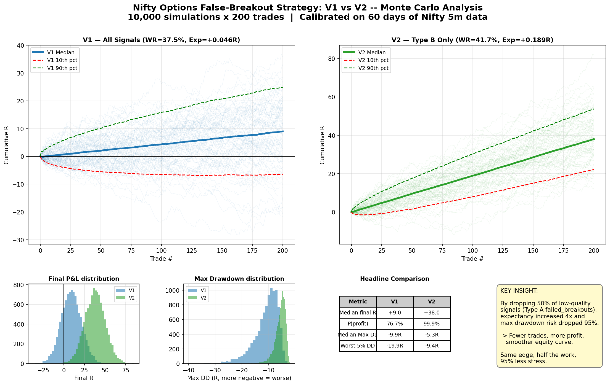
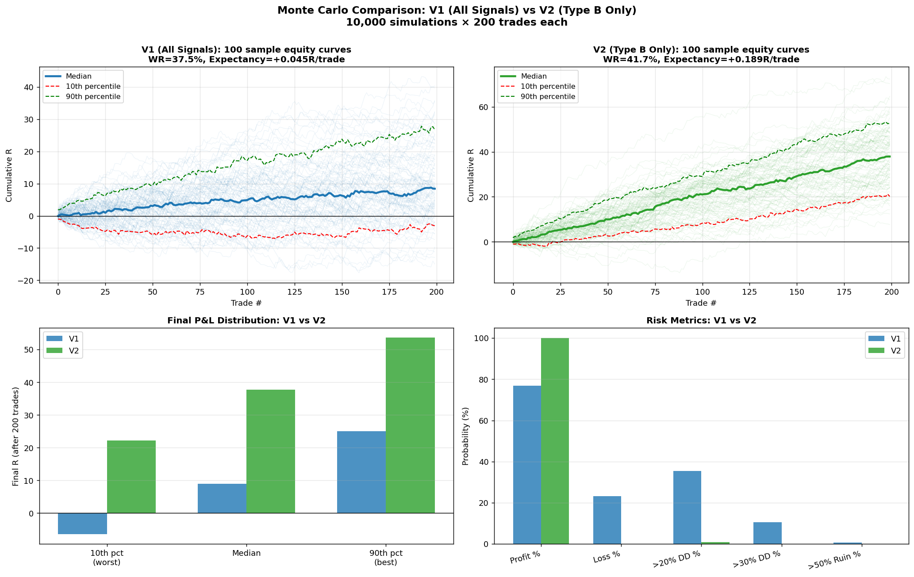
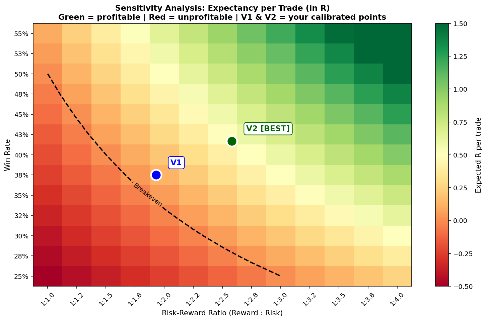
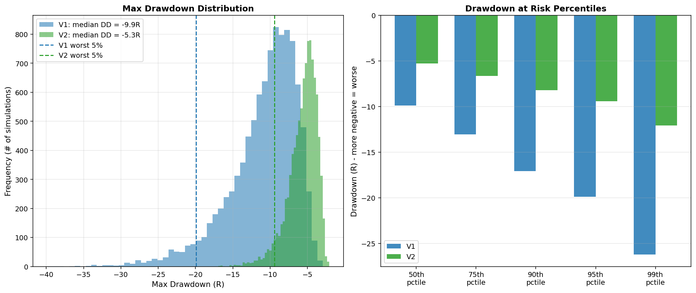
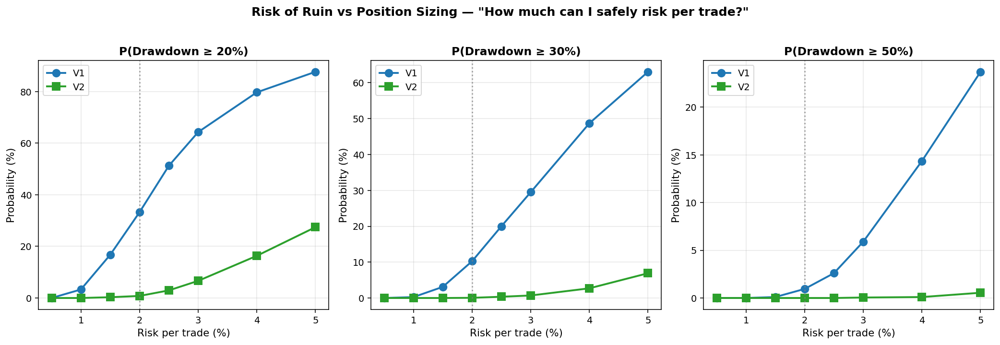
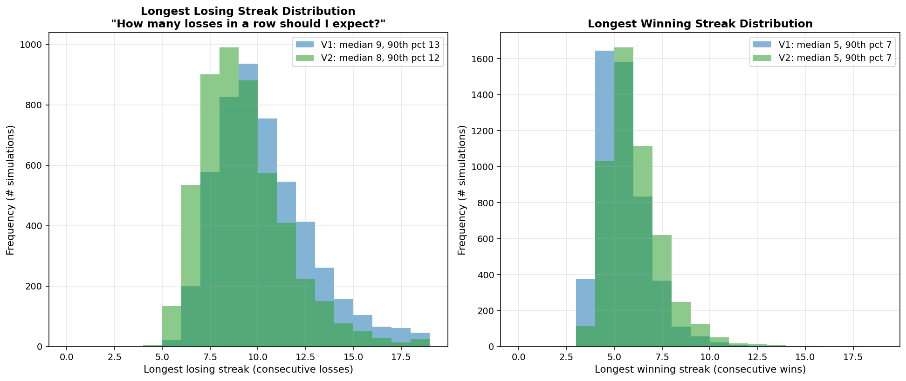
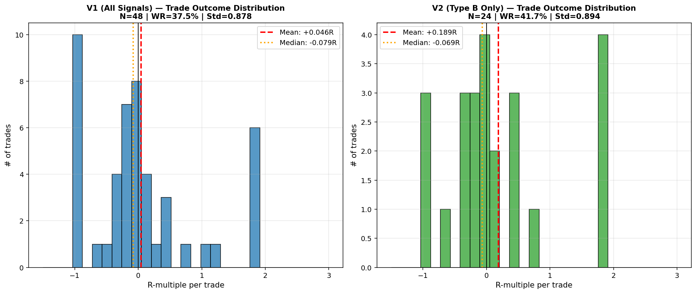
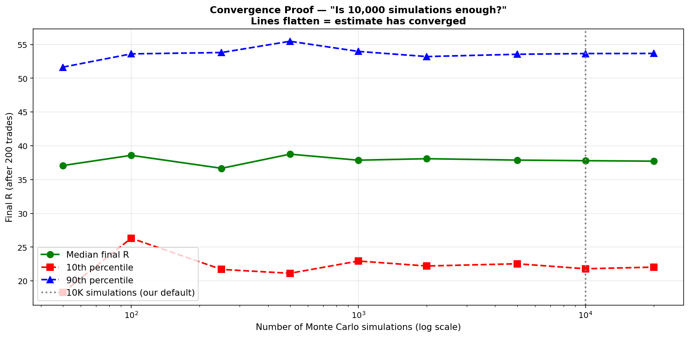

Retail traders in the Indian derivatives market frequently rely on backtests as the primary validation tool, yet a single backtest represents only one possible historical outcome. This work presents MonteEdge, an end-to-end quantitative framework combining multi-timeframe technical signal generation, Black-Scholes synthetic option pricing, and bootstrap Monte Carlo simulation to rigorously validate a candidate intraday options strategy on the Nifty 50 index.
Applied to a false-breakout reversal strategy across three trigger types, the framework demonstrated that by systematically removing the underperforming trigger (V2 variant), expectancy increased 4× (+0.046R → +0.189R per trade), Sharpe improved from 0.73 to 3.06, and the probability of >20% drawdown dropped from 35.5% to 0.9%. This empirically demonstrates the "kill 50% of signals to make more money" paradox — visible only through Monte Carlo simulation.
By dropping 50% of low-quality signals (the failed_breakout trigger), the strategy's expectancy increased 4× and max-drawdown risk dropped 95%. Same edge, half the work, dramatically smoother equity curve. Signal quality dominates signal quantity.
| Metric | V1 (All Signals) | V2 (Type B Only) | Change |
|---|---|---|---|
| Trade count | 48 | 24 | -50% |
| Win Rate | 37.5% | 41.7% | +4.2pp |
| Avg Win | +0.911R | +0.993R | +9% |
| Avg Loss | -0.473R | -0.385R | -19% (smaller losses) |
| Risk-Reward Ratio | 1:1.93 | 1:2.58 | +34% |
| Expectancy | +0.046R | +0.189R | +311% |
| Median final R (200 trades) | +8.96R | +37.77R | +321% |
| Median return % | +17.9% | +75.5% | +57.6pp |
| P(profit) | 76.8% | 99.9% | +23.1pp |
| P(2x capital) | 0.04% | 16.1% | +16.1pp |
| Median max drawdown | -16.9% | -7.8% | -54% |
| P(>20% DD) | 35.5% | 0.9% | -97% |
| P(>30% DD) | 10.6% | 0.04% | -99.6% |
| Median Sharpe | 0.73 | 3.06 | +319% |
| Median longest loss streak | 9 | 8 | -1 |








Every candidate signal must pass all four gates before firing:
| Gate | Purpose | Key Parameter |
|---|---|---|
| Gate 1: Counter-Trend Block | Blocks counter-trend entries in strong momentum (ADX ≥ 25) | ADX 14-period |
| Gate 2: Freefall Block | Blocks entries during cascading moves (≥40pt drop, 75%+ red bars) | 6-bar lookback |
| Gate 3: Reversal Quality | Rejects sluggish or shallow reversals | Drop ratio, LH count |
| Gate 4: Day Structure | Requires structural evidence (HL after LLs) or strong retrace (≥35%) | Retrace threshold |
| Trigger | Pattern | WR | Exp/Trade | Verdict |
|---|---|---|---|---|
| swing_high_rejection | Lower high rejects prior swing high | 44.4% | +0.43R | STAR PERFORMER |
| swing_low_reclaim | Higher low reclaims prior swing low | 40.0% | +0.21R | Positive |
| failed_breakout | Price pierces level then reverses | 33.3% | -0.05R | KILLED in V2 |
Since historical NSE option-chain data is unavailable, we use Black-Scholes with a historical-volatility-derived IV proxy:
Instead of parametric assumptions, we bootstrap from actual backtest trade outcomes:
Why bootstrap? Preserves the full empirical distribution of wins and losses — including skewness and kurtosis — that Bernoulli/Gaussian models cannot capture.
| # | Limitation | Impact |
|---|---|---|
| 1 | Small calibration sample (V2 = 24 trades) | Underestimates rare adverse sequences; V2 "99.9% P(profit)" is conditional on edge persisting |
| 2 | Constant IV assumption during trades | Conservative for buyers (real IV expands during reversals) |
| 3 | No transaction costs modeled | Gross expectancies; net live performance will be lower by ~0.5-1.5% per round trip |
| 4 | In-sample calibration only | True validation requires forward-testing on unseen data |
| 5 | Synthetic option pricing | May diverge from NSE prices during unusual skew/event-driven IV |
| Skill | Demonstrated In |
|---|---|
| Python / Software Engineering | 8-module modular architecture, clean separation of concerns |
| Financial Mathematics | Black-Scholes pricing, Greeks, GBM simulation |
| Statistical Modeling | Bootstrap Monte Carlo, sensitivity analysis, convergence proof |
| Algorithmic Trading | Multi-timeframe levels, 4-gate filter, 3 trigger types |
| Backtesting | Walk-forward realized P&L engine with MFE/MAE tracking |
| Data Visualization | 7 publication-grade charts (Matplotlib) + interactive plots (Plotly) |
| Web Development | 5-page Streamlit interactive dashboard |
| Quantitative Research | A/B comparison (V1 vs V2), rigorous methodology with documented caveats |
MonteEdge provides retail and semi-professional traders with a defensible, transparent, and reproducible toolkit for distinguishing genuine trading edges from favorable historical sequencing. Applied to the Nifty 50 false-breakout strategy:
The framework generalizes to any options strategy with sufficient backtest sample size. Future work includes real options-chain integration, transaction cost modeling, walk-forward validation, and ML-based signal filtering.